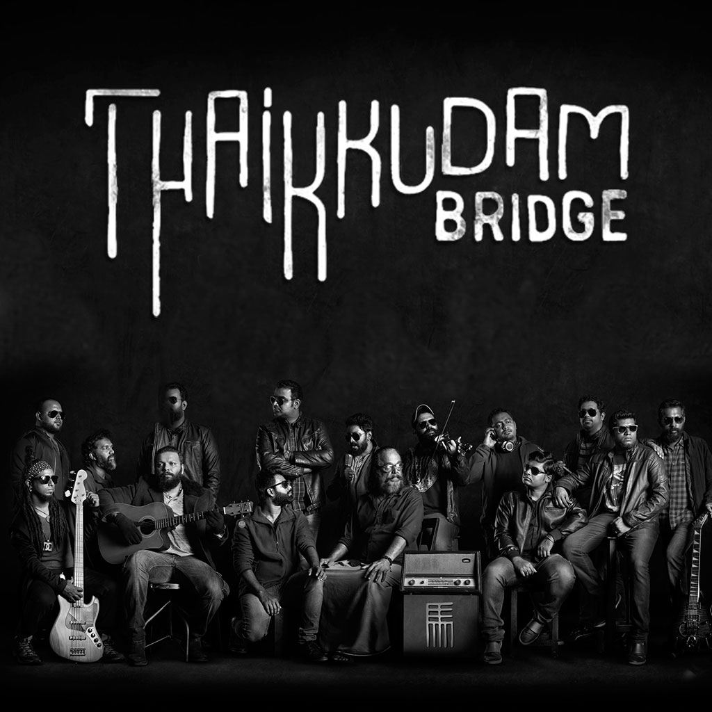

Thaikkudam Bridge the rock band with a soundscape built upon elements of folk and classical sounds of India interspersed, at times, with layers of progressive, pop, ambient and electronic textures. 10 years, 650+ shows, 100+ international shows in 25 countries, it truly has been a stupendous journey for the band. With a 15 member ensemble cast the band's strength lies in its versatility and unpredictability thanks to nine vocalists and six instrumentalists from the length and breadth of the country, each of whom brings on board, a wealth of diverse musical, linguistic and cultural influences thus creating a unique musical experience that is truly global in nature yet local in idea.
Navarasam, the debut album was released in 2016 and it has 10 songs in all ( 9 + 1 bonus track). Navarasam is an assortment of songs that talks of dreary existentialism, socio-political commentaries, rebellion, freedom and of the human spirit of oneness! The second album, Namah, a dream project released to the delight of music lovers in 2019 , and is a collaborative featuring legendary artists from around the globe. With legendary associations such as Guthrie Govan, Chris Adler, Marco Minnemann, Jordan Ruddess, Pandit Ram Narayan, Pandit Viswamohan Bhat, Padmabhushan Umayalpuram K Sivaraman, Ustad Rashid Khan, Niladri Kumar, Anand Raj Benjamin Paul, the album was a milestone in Indian Independent Music. The band was conceived by Siddharth Menon and Govind Vasantha in 2013. The band’s name, proposed by band member Piyush Kapoor (ex-member), is derived from a bridge located in Kochi, Kerala. Prior to forming Thaikkudam Bridge, the members had individual careers as musical artists. The members of the band Siddharth Menon and Vian Fernandes were previously part of a band. Soon after, they formed as a band, beginning with performances in Music Mojo sessions in 2013. Following the band's commercial breakthrough and increased demand for live shows, members put their individual careers on hold and focused on the Thaikkudam Bridge.